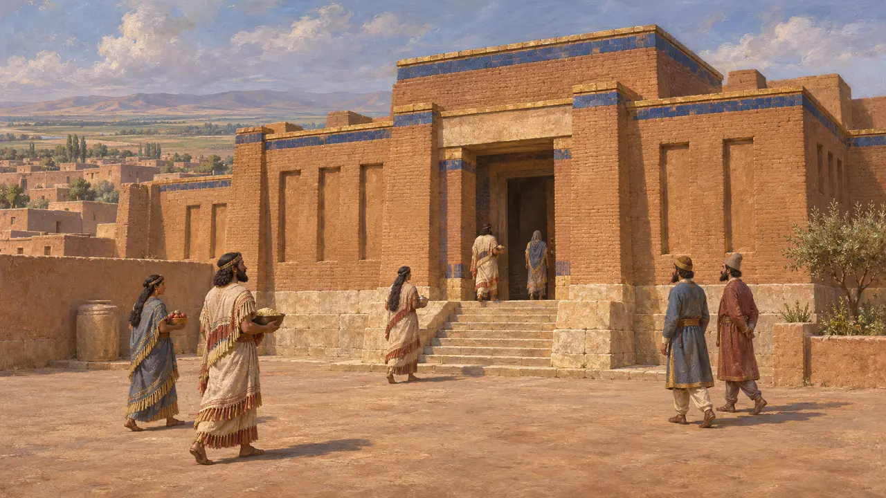
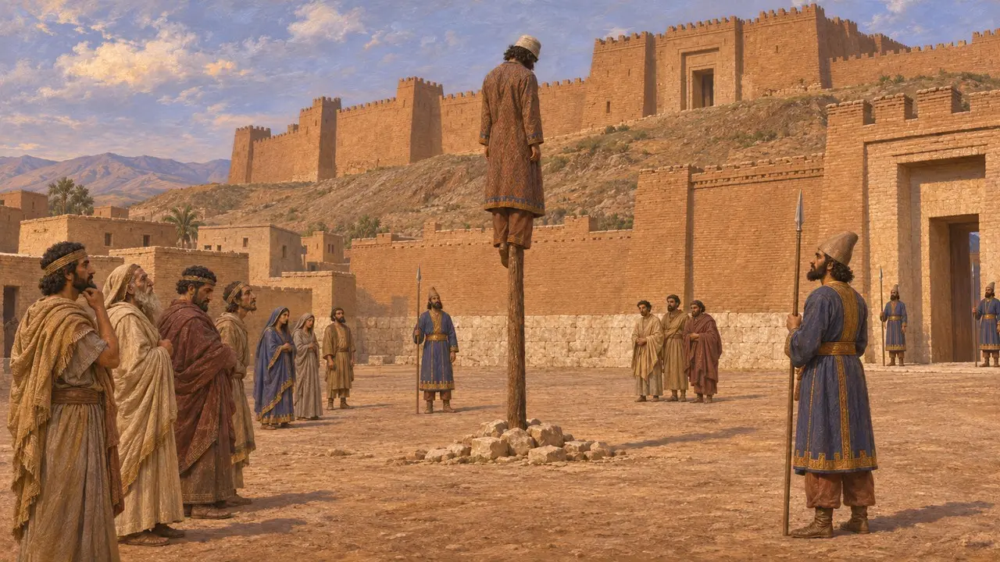
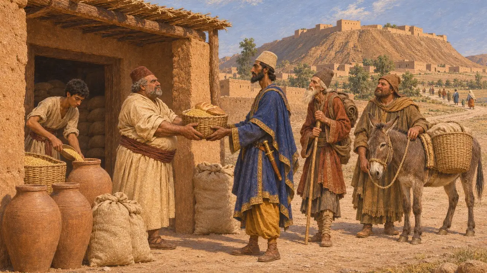
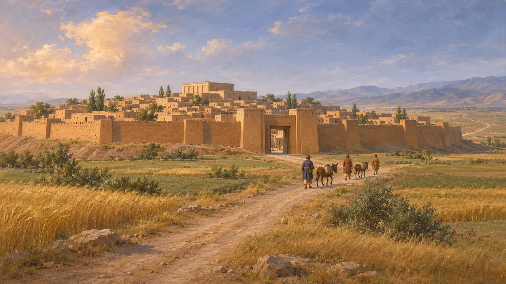
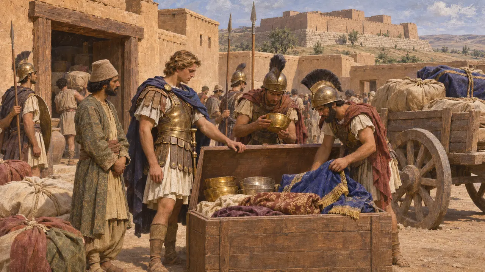

أربيلا
مدينة آشورية قديمة، هي أربيل الحديثة، خضعت للحكم الفارسي منذ القرن السادس ق.م
كانت أربيلا، وهي أربيل الحديثة في شمال العراق، مدينة آشورية قديمة تقوم على تلّ مرتفع بين نهري الزاب الكبير والزاب الصغير. وكانت مركزاً لعبادة عشتار ومحطة على الطرق التي تربط بلاد بابل وميديا والشمال الغربي. وقد ذكرها داريوس في بهستون موضعاً أعدم فيه أحد زعماء التمرد، مما يدل على قيمتها مسرحاً علنياً في بلاد آشور التابعة للملك.
في اللعبة: لا تُظهر اللعبة أربيلا إلا شريكًا تجاريًا باسم تجّار أربيلا. وقد كانت المدينة حقًّا على طرق مزدحمة، لكن المصادر لا تقول إلا القليل عن تجّارها، فهؤلاء التجّار تبسيط من اللعبة.

مدينة عشتار الآشورية
في السجلاتتسمّي النصوص الآشورية المدينة أربا-إيلو، وكثيراً ما يُفسَّر الاسم بمعنى «أربعة آلهة». وكان لإلهتها، عشتار أربيلا، معبد كبير فيها. ولا تزال نبوءات نطق بها عبّادها للملك أسرحدون في سبعينيات القرن السابع ق.م محفوظة على ألواح من نينوى. والأرجح أن المدينة بقيت بعد سقوط آشور، وتسجّل حولية نبونيد أن قورش عبر بجيشه نهر دجلة أسفل أربيلا عام 547.
S. Parpola, Assyrian Prophecies, 1997; Nabonidus Chronicle (ABC 7)

موضع للإعدام في بهستون
في السجلاتيروي داريوس في نقش بهستون كيف ادّعى رجل ساغارتي يُدعى تشيسانتخما المُلك في أثناء ثورات عامَي 522 و521 ق.م. ويقول داريوس إنه جدع أنف الرجل وقطع أذنيه وخوزقه في أربيلا. وقد جعل اختيار هذه المدينة العقوبةَ ظاهرةً لأهل الإقليم، كما عرض داريوس المتمرد الميدي فرافارتيش في إكباتانا.
DB §33

محطة على طرق الملك
في السجلاتتذكر رسالة آرامية للساتراب أرشامة، كُتبت في أواخر القرن الخامس فهي بذلك أحدث من حقبة اللعبة، أربيلا بين المواضع التي يحق فيها لموظفه نختحور أن يتسلّم المؤن في رحلته إلى مصر. وهي تُظهر المدينة نقطةَ تموين في نظام السفر الفارسي. ولا تزال الطبقات العائدة إلى العهد الفارسي في تل القلعة قليلة الاستكشاف.
B. Porten and A. Yardeni, Textbook of Aramaic Documents from Ancient Egypt 1, 1986, A6.9

أيّ أرض وأيّ طريق
متنازع عليهيضع المؤرخون عمومًا أربيلا في أرض أثورا الفارسية، قلبِ آشور القديم، غير أن حدودها مع ميديا غير محددة بوضوح في المصادر. ويصف هيرودوت الطريق الملكي من سارديس إلى سوسا عابرًا أرمينيا وماتيينه دون أن يذكر أربيلا. ويختلف الباحثون المحدثون في ما إذا كان الطريق يمر بالمدينة أم يبتعد عنها شمالًا وشرقًا.
Herodotus 5.52; P. Briant, From Cyrus to Alexander, 2002

المعركة التي حملت اسمها
رواية قديمةيقول أريانوس إن داريوس الثالث، بعد هزيمته على يد الإسكندر عام 331، فرّ عبر أربيلا، حيث استولى الإسكندر بعد ذلك على الأمتعة والكنوز الملكية. ويشكو أريانوس أيضاً من أن المعركة نُسبت خطأً إلى أربيلا، إذ دارت في غوغميلا التي حدّد الكتّاب موقعها على بعد نحو 500 إلى 600 ستاديون منها.
Arrian, Anabasis 3.15; Arrian, Anabasis 6.11
المصادر
- DB §33
- Nabonidus Chronicle (ABC 7)
- B. Porten and A. Yardeni, Textbook of Aramaic Documents from Ancient Egypt 1, 1986
- P. Briant, From Cyrus to Alexander, 2002
- S. Parpola, Assyrian Prophecies, 1997
- Arrian, Anabasis 3.15